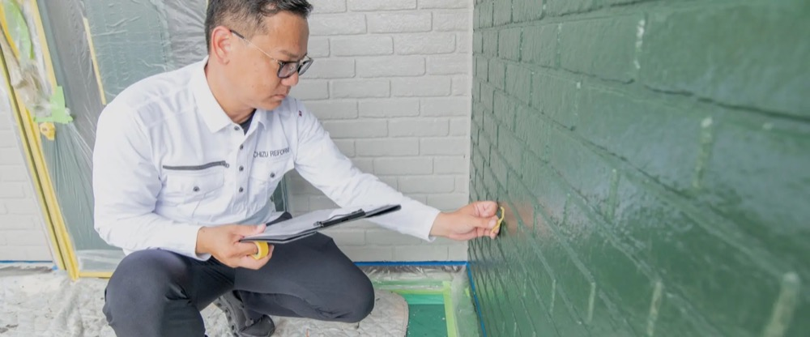
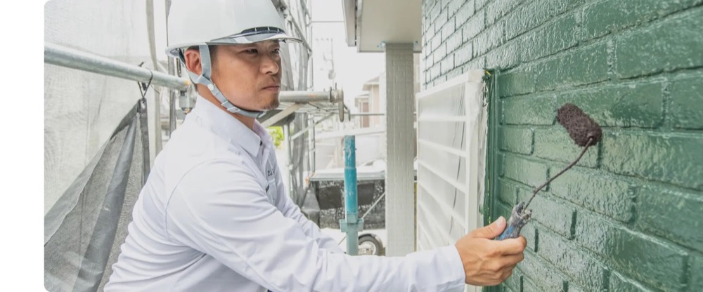
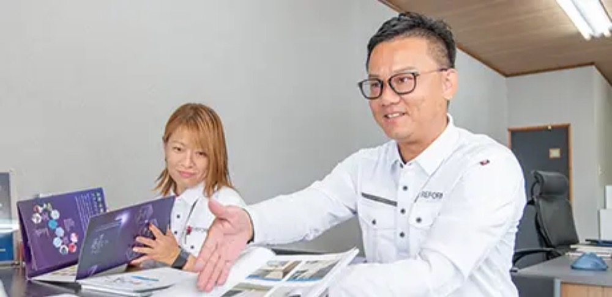
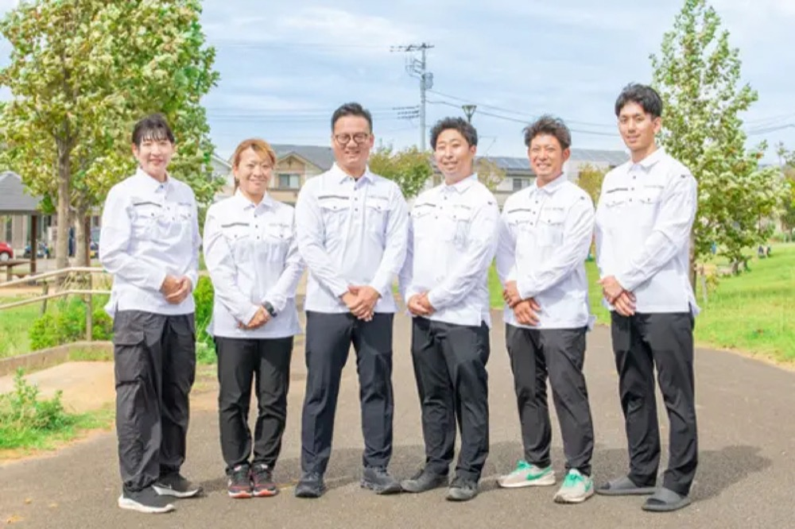

疲れた住まいを蘇らせるリフォーム会社
市川 大祐Daisuke Ichikawa
いちずリフォーム株式会社 代表取締役
大手リフォーム会社で営業職を経験後、顧客本位でない業界慣行に疑問を抱き、個人事業主として「いちずリフォーム」を創業。昨年、法人化し、千葉市緑区を拠点に外壁塗装や屋根工事を中心とした地域密着型のリフォーム事業を推進している。
企業サイトを見るTRACK 01
疲れた住まいを蘇らせるリフォーム会社

住宅に“定期点検”が必要であるという発想は、どこか私たちの生活の奥底に忘れられがちである。時間が経つにつれ、外壁や屋根は外壁や屋根は疲れ、くたびれてゆく。だが、その変化は日々の営みに溶け込み、住む人にとっては当たり前の風景になってしまう。そういった中で、家を守るという、地道で力強い使命を、静かにそして誠実に貫く会社がある。
千葉市緑区に拠点を持つ、いちずリフォーム株式会社だ。同社の主力は外壁塗装や屋根工事、そして住宅の各種リフォームなど、それは単なる修繕ではない。10年、20年を共に過ごした住まいを、もう一度家族の心地よい拠点として蘇らせる、そんな役割である。
代表取締役の市川大祐はこう語る。「車に車検があるように、住宅にもメンテナンスが必要です。早め早めに手を入れることで、余計な負担やコストを防ぐことができるんです」
TRACK 02
納得できる仕事を自分の手で

市川がリフォームの世界に足を踏み入れたのは、大手リフォーム会社に勤めていたときのこと。顧客ではなく数字重視の営業体質に感じた歯がゆさ、そして金額は同じでも工事の中身がバラバラなことについて違和感を持ったことが独立への原動力となった。
納得できる仕事を自分の手でやりたかった。満を持して、個人事業として「いちずリフォーム」を立ち上げる。利益よりも顧客満足を優先する、これが社名の由来でもある「一途＝いちず」な理念だ。
試行錯誤の時を経て、昨年ついに法人化を果たし、少数精鋭のチームとともに地域密着型の事業モデルを確立した。この仕事に特別な憧れがあったわけではない。それでも「ありがとう」と直接言ってもらえる喜び、手ごたえが続ける原動力になっていると語る。


TRACK 03
多角的な視点から顧客を支える基盤
いちずリフォームの社内は数名の少数精鋭。千葉県出身のスタッフが和気あいあいと働き、現場の声も代表の想いもダイレクトに共有される風通しの良い環境だ。急なトラブルにも機動力を発揮し、社員一人ひとりが「地域の役に立っている」という自覚と誇りを持っている。
外壁塗装・屋根塗装を主力としつつ、雨漏り修理や防水工事、室内の水回り改修など、サービスメニューも拡充中のいちずリフォーム。最近では、給湯器エコキュート関連の地域密着サービスや、内装リフォームにも力を入れ始めた。
小さな補修から大きな改修まで、住まいの困りごとにワンストップで対応可能で、社内には外壁劣化診断士や雨漏り診断士といった資格保有者も在籍しており、最新塗料の積極導入、地元メーカーとの連携もスムーズ。様々な視点から住まいを守る体制が整っている。